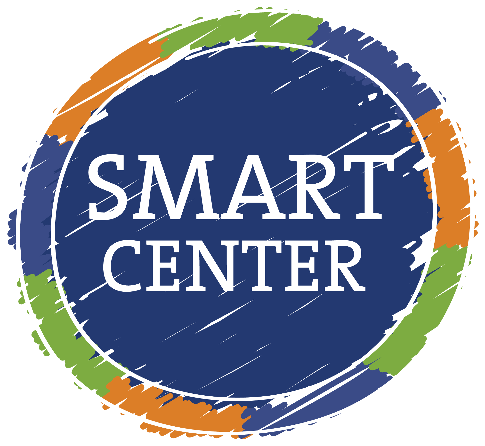
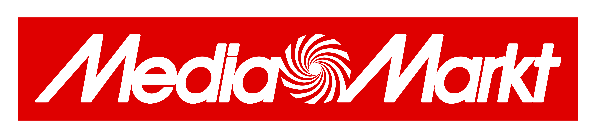
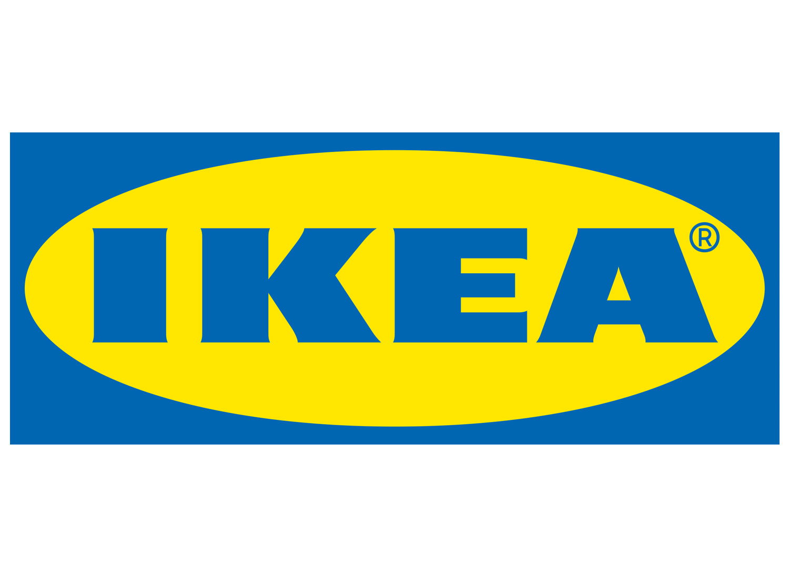
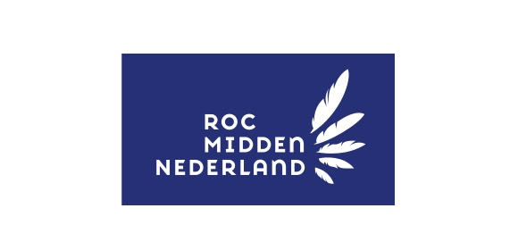

Work experiences
In this section, I'll provide you with a glimpse into my professional journey and the valuable experiences I've gathered along the way. From the early steps in my career to my current role, each opportunity has contributed to my growth and expertise. Join me as I share the highlights of my professional endeavors.
Introduction
I am Sulaiman Hashimi, a Functional Manager of OWS (Ortec Workforce Scheduling) through Sogeti at gemeente Amsterdam. I have experience in business analysis from my time at Triple-P. I have experience with Salesforce and a strong affinity for Tosca and Selenium. I have 8 years of experience in various IT roles, including business analyst and system administrator, and hold both an MBO and HBO IT diploma.
During my Quality Engineering & Testing traineeship, I learned structured testing according to TMAP principles and obtained certifications in Azure, Scrum, and Selenium. I excel in my knowledge of hardware and software, drawing from my experience as a system administrator, allowing me to approach my work as a tester with a broad perspective. At Triple-P, I conducted process analyses, learning to collaborate with business analysts and work methodically. My initial step in any assignment is to gain a helicopter view and then delve into the details. This was essential in my assignment at SMS Microsystems, where I managed 100 applications and needed to switch continuously. By creating smart overviews and planning my work effectively, I achieved success.
My ambition is to work on projects with high complexity, preferably involving Tosca or other automation tools. I thrive in environments where I collaborate closely with end-users and stakeholders.
In my free time, I value a healthy balance by staying active with fitness and spending quality time with friends and family.
Side jobs
Burger king
Period:
2014-03 to 2015-03
Function:
Kitchen Employee
Company:

Description:
As a former kitchen employee at Burger King, my primary responsibilities included food preparation, adherence to food safety standards, equipment operation, order accuracy, inventory management, and maintaining a clean and organized kitchen environment. I collaborated effectively with my team, followed company procedures diligently, and prioritized customer satisfaction. My role focused on delivering quality food and maintaining a safe, efficient kitchen.
Smartcenter
Period:
2018-06 to 2019-03
Function:
Callcenter employee
Company:

Description:
In my role at SmartCenter, I served as a call center employee specializing in incasso services for banks. My responsibilities included managing customer inquiries, addressing debt-related issues professionally and efficiently, and providing assistance in financial matters. I maintained a high level of accuracy and compliance with banking regulations while delivering exceptional customer service.
Media Markt
Period:
2019-02 to 2020-03
Function:
Salesman
Company:

Description:
During my tenure at Media Markt, I worked as a salesman in the computer department. I successfully guided customers through the selection process, providing expert advice on computer products and peripherals. I consistently met and exceeded sales targets, demonstrating a deep understanding of the latest technology trends and excellent interpersonal skills.
Ikea
Period:
2020-03 to 2020-06
Function:
Salesman
Company:

Description:
At IKEA, I served as a salesman for a summerjob in the mattress and beds department. My role involved helping customers find the perfect sleep solutions tailored to their preferences and needs. I showcased in-depth product knowledge, ensuring customers made informed decisions. I also contributed to maintaining a well-organized and appealing department layout.
Teleperformance
Function:
Callcenter employee
Company:
Description:
In my position at Teleperformance, I worked as a call center employee handling first-line calls related to COVID-19 issues. I provided essential information, reassurance, and guidance to callers during the pandemic. Additionally, I efficiently scheduled and managed appointments for various services, demonstrating strong communication and crisis management skills.
Internships
ROC Midden Nederland
Period:
2015-09 to 2016-01
Function:
Servicedesk
Company:

Description:
As a system administrator and project manager at ROC Midden Nederland, I was responsible for maintaining and managing the organization's IT infrastructure to ensure its security, reliability, and availability.
My tasks included supervising colleagues during busy periods, resolving hardware and software issues, implementing IT solutions, managing user accounts, monitoring system performance, overseeing backup and disaster recovery procedures, planning and executing IT projects, leading a team of IT professionals, maintaining client relationships, staying updated on technological advancements, and ensuring compliance with information security regulations.
I successfully led colleagues during busy periods, resolved hardware and software issues, implemented IT solutions on Windows Server 2012, improved system performance, managed user accounts, monitored system performance, conducted regular updates and upgrades, and executed IT projects.
Through these actions, I honed my management and ICT skills, effectively maintaining and managing the organization's IT infrastructure. My colleagues were highly satisfied with my performance, and my client encouraged me to pursue higher education as a result.
SMS Microsystems
Period:
2016-02 to 2017-07
Function:
Servicedesk
Company:

Description:
As a service desk employee at SMS-microsystems, I provided technical support to customers, addressing hardware and software issues via phone, email, and chat. My tasks included problem analysis, guiding customers to resolve issues, and documenting incidents in our ticketing system (Topdesk) to track progress and keep customers informed.
Additionally, I served as a server administrator, responsible for server management and maintenance for our clients. This involved server installation, configuration, updates, troubleshooting, security measures implementation, and performance monitoring. I handled various operating systems like Windows and Linux, as well as software applications such as SQL, Exchange, and SharePoint. Regular server checks and backups ensured the security and continuity of our clients' business operations.
Triple-P
Period:
2021-09 to 2022-01
Function:
Business and Proces analyst
Company:

Description:
As a process analyst and business consultant at Triple-P, my primary role was to identify and advise on resolving issues in the IT environment and workflow. The organization had recently implemented a new agile methodology called 'the new way of working,' which posed challenges such as role ambiguity, lack of communication between teams, and process inefficiencies.
To pinpoint these issues, I employed various methods. Initially, I conducted interviews with team members to gather their perspectives and gain a better understanding of the situation. Subsequently, I collected data by analyzing processes and monitoring team performance, enabling me to identify problems and their root causes.
After analyzing the data, I collaborated with stakeholders to discuss the findings and develop suitable solutions, considering the organization's specific requirements and feasibility.
With a solution in hand, I assisted in its implementation by providing team training, creating guidelines, and establishing a progress tracking system. This led to a successful implementation, enhancing team efficiency and communication. The client was highly satisfied with the results and improvements achieved.
Sogeti
Period:
2022-02 to 2022-10
Function:
Business and Proces analyst
Company:

Description:
During my internship at Sogeti, I encountered an issue involving the inefficient use of team-related metrics by clients, which presented a complex challenge. These metrics encompassed productivity, customer satisfaction, and team efficiency. My task was to investigate and improve this situation by designing a suitable solution to promote the efficient application of these metrics.
To accomplish this task, I took several steps. Firstly, I conducted interviews with stakeholders and conducted thorough research to assess the current situation, identifying areas for improvement in metric utilization. Subsequently, I designed a solution that could achieve the desired outcomes by applying metrics more efficiently, supported by my comprehensive thesis.
Through my efforts during my internship, I successfully addressed the complex issue related to the inefficient application of team-related metrics by clients. My designed solution led to more efficient metric utilization and contributed to enhancing team performance. I take pride in my achievements during my internship and my contributions to the organization, ultimately leading to my current position at Sogeti.
Profession
Sogeti
Period:
2022-10 to 2023-02
Function:
Agile Test Engineer - Trainee
Company:
Description:
I recently completed the Specialization Program for Agile Test Engineers with distinction.
During this program, I delved into the theory of TMAP Quality for cross-functional teams and obtained the associated certification. I put this theory into practice by testing a web store, gaining experience in documenting and executing test cases for both the User Interface and the API (SOAP/JSON). Additionally, I became proficient in automating API test cases using Postman and setting up test data in an SQL database.
In the realm of Test Automation, I underwent training in TOSCA and received extensive instruction on automation theory and its practical application. The program emphasized Agile and Scrum methodologies, leading to my achievement of the Professional Scrummaster (PSM1) certification and hands-on experience in an Agile environment.
Before embarking on this program, I participated in a business course at Ohio University, where I honed my ability to perform effectively in high-pressure team settings. This was accomplished through High-Performance Teaming, timeboxing, and daily SCRUM sessions, allowing me to further develop my interpersonal skills.
Gemeente Amsterdam
Period:
2023-02 to Current
Function:
Functional Manager
Company:

Description:
As a dedicated Functional Manager, I have played a pivotal role in optimizing the Ortec Workforce Scheduling (OWS) application for Gemeente Amsterdam. My responsibilities encompass a wide range of critical tasks that contribute to the effective management and enhancement of this essential software solution.
My primary focus has been on ensuring the seamless operation and functionality of the OWS application. This involves constant monitoring, troubleshooting, and proactive measures to guarantee that it serves its purpose efficiently and without disruptions.
In my capacity as a Functional Manager, I've been at the forefront of change management efforts. I've collaborated closely with cross-functional teams to implement changes, enhancements, and updates to OWS. This collaboration is essential to keep the application aligned with the evolving needs of Gemeente Amsterdam and to ensure it remains a valuable asset for the organization.
A crucial part of my role involves testing. I meticulously oversee the testing of changes and updates to OWS, ensuring that they meet the highest standards of quality and reliability. This meticulous testing process is essential to minimize any potential disruptions to operations.
Beyond technical aspects, effective stakeholder engagement has been a cornerstone of my role. I maintain constant communication with stakeholders to understand their needs, address concerns, and gather feedback. This two-way communication ensures that OWS remains closely aligned with the goals and requirements of Gemeente Amsterdam.
Additionally, I take pride in my ability to organize meetings and presentations effectively. These gatherings serve as vital platforms for sharing updates, discussing strategies, and ensuring that all stakeholders are well-informed and engaged in the ongoing management of OWS.
In summary, my role as a Functional Manager at Gemeente Amsterdam through Sogeti has been multifaceted. I've managed the OWS application, facilitated changes, conducted rigorous testing, engaged with stakeholders, and organized meetings and presentations. My commitment to excellence in these areas has contributed significantly to the successful management of OWS and the overall operational efficiency of Gemeente Amsterdam.